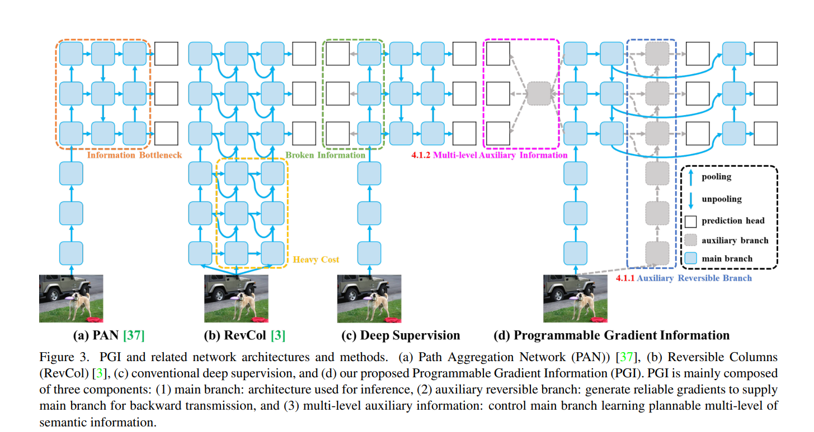
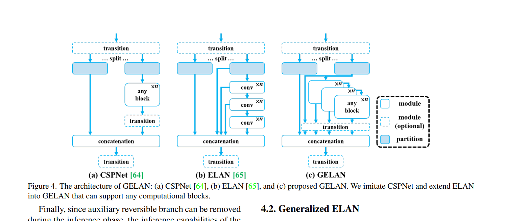
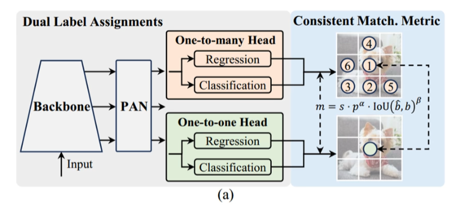
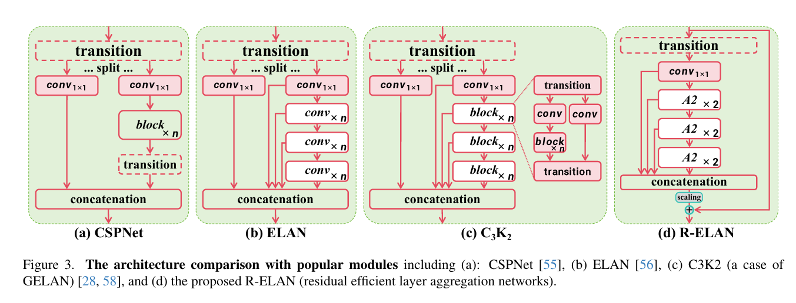

# YOLO-V9 V10 V11 V12 新特性汇总
了解新特性，以便启发未来学习与科研。
# V9
学了 YOLO 的许多版本我个人认为在学术上，v3、v4、v7、v10 是非常有意义的，v5、v8、v11 工程化做的非常厉害。v9 我认为这是一个追求信息无损的理想主义者，PGI 这种高大上的概念，但如果你拆开它的代码看，它的核心实现非常依赖于辅助头，PGI 带来的那点提升，往往不如换一个更好的数据增强方案或者稍微调大一点输入分辨率来的实在，但是 v9 的 GLAN 还是很有想法的。
# 原文与源代码
【YOLOv9: Learning What You Want to Learn Using Programmable Gradient Information】：https://arxiv.org/abs/2402.13616
【WongKinYiu Yolov9】 https://github.com/WongKinYiu/yolov9/tree/main
# PGI 可编程梯度信息
输入数据在经过每一层非线性变换时，都会丢失一部分原始信息。当网络变得非常深时，用于计算损失函数的预测信息可能已经丢失了目标的本质特征，导致梯度更新的方向不再准确。**PGI ** 就是 YOLOv9 为了解决这个问题提出的核心方案。PGI 并不是一个单一的层，而是一个由三部分组成的训练辅助系统：
# 主分支
这就是我们最终用于推理的网络。在 YOLOv9 中，主分支采用的是 GELAN 架构。因为 PGI 在训练时提供了强大的梯度引导，主分支可以设计得非常精简，不需要额外的算力开销。
# 辅助可逆分支
这是 PGI 的精髓。为了确保网络能学到最完整的特征，YOLOv9 引入了一个可逆架构作为辅助。
- 原理： 可逆网络理论上可以从输出完全还原输入。
- 作用： 它是为了给主分支提供保真的梯度。它强制网络在深层依然保留输入数据的完整信息，防止特征在传递过程中被洗掉。
# 多级辅助信息
v9 在训练时实际上有 6 个输出，通过多个检测头来缓解深度网络中的梯度消失或信息瓶颈。
# GELAN 通用高效层聚合网络
为什么需要 GELAN？很多模型堆叠了大量的层，但实际对结果贡献的有效权重并不多，复杂的跨层连接虽然能提升精度，但往往会拖慢预测速度。GELAN 结合了 CSPNet 的梯度路径优化能力和 ELAN 的结构优势。
ELAN：

ELAN 的缺点是它的设计比较刚性，ELAN 依赖于特定的卷积层堆叠方式，通常是固定的 卷积，如果你想把其中的模块换成 Transformer Block 或其他更先进的计算单元，ELAN 的原始设计很难兼容，或者兼容后效果不佳。
CSP：

CSPNet 的核心是将特征图拆分为两部分，一部分经过计算块如 Bottleneck，另一部分直接跨层连接。这种 “二分法” 虽然减少了重复梯度信息，但它的结构相对固定。在处理极其深层的网络时，这种简单的拆分合并依然会带来一定的计算冗余，且对特征的融合不够细腻。
GELAN 有极高的参数效率，这是 GELAN 最直观的优势。在达到相同检测精度的情况下，GELAN 表现出了惊人的瘦身能力。总体框架类似于把 C3 嵌入 C2f，只是组成的基本模块不同而已。
# V10
# 原文与源代码
【YOLOv10: Real-Time End-to-End Object Detection】：https://arxiv.org/abs/2405.14458
【THU-MIG yolov10】：https://github.com/THU-MIG/yolov10
如果说 YOLOv9 是在研究如何让网络学得更好，那么 YOLOv10 的核心逻辑就是如何让部署变得更快。 NMS-Free 无后处理抑制给予我们回答。
# 双重分配策略消除 NMS
class v10Detect(Detect): | |
end2end = True | |
def __init__(self, nc: int = 80, ch: tuple = ()): | |
super().__init__(nc, end2end=True, ch=ch) | |
c3 = max(ch[0], min(self.nc, 100)) # channels | |
# Light cls head | |
self.cv3 = nn.ModuleList( | |
nn.Sequential( | |
nn.Sequential(Conv(x, x, 3, g=x), Conv(x, c3, 1)), | |
nn.Sequential(Conv(c3, c3, 3, g=c3), Conv(c3, c3, 1)), | |
nn.Conv2d(c3, self.nc, 1), | |
) | |
for x in ch | |
) | |
self.one2one_cv3 = copy.deepcopy(self.cv3) | |
def fuse(self): | |
"""Remove the one2many head for inference optimization.""" | |
self.cv2 = self.cv3 = None |
想象一下你在拍合照，你哥们儿正好站在你身后，露出了半张脸。
NMS 的它看到两个框重叠度太高，就觉得这肯定是同一个人多画了一个框，直接把后面那个人的框给删了。在火车站排队、超市货架这种人挤人、货挤货的地方，NMS 经常把明明存在的两个物体，“抹杀” 得只剩一个。NMS 还有一个缺点，NMS 的逻辑是模型算完了，要把成千上万个候选框传给 CPU，让 CPU 慢慢排个序，再一个个比对重叠度，AI 算图像只要 5 毫秒，结果 NMS 后处理可能要花 10 毫秒。这就像是你网购东西，快递半天就到市中心了，结果最后一公里派送花了两天。
YOLOv10 搞双重分配就是为了把这个保安给开除掉，YOLOv10 觉得，既然 NMS 太慢太烦，那能不能只出一个框？但如果一开始就只准出一个框，梯度不够，很难收敛太容易学懵了。
YOLOv10 想了个绝招：弄两个分身一起练。
在训练时，模型分裂成两个 “分身”：
- 分身 A 一对多：还是老样子，一个目标允许套多个框。它的任务是感受目标长啥样，负责给整个模型提供丰富的学习经验。
- 分身 B 一对一：强制要求，一个目标只能出一个框。它盯着分身 A 学，任务是学会精准克制。
这两个分身共享同一个特征提取器，就是那个什么骨干啊，什么特征金字塔啊
- 分身 A 像是个经验丰富的老师
- 分身 B 就在旁边坐享其成，利用 A 练出来的特征，只练习最后那一招一剑封喉
重点来了！等模型练成了，要上战场推理部署的时候，这小子不讲武德，直接把分身 A 给开除了，只留下分身 B 极简模式去工作。因为分身 B 已经练就了 “一个萝卜一个坑” 的本领，它输出的结果里，每个目标就真的只有一张框，NMS 直接原地失业。
总结一下，双重分配策略就是训练时用多框带路保精度，推理时用单框干活保速度。
# 特色模块 1-SCDown
SCDown 让模型在把图片变小的过程中，花的力气更少，记下的东西更多。
class SCDown(nn.Module): | |
def __init__(self, c1: int, c2: int, k: int, s: int): | |
super().__init__() | |
self.cv1 = Conv(c1, c2, 1, 1) | |
self.cv2 = Conv(c2, c2, k=k, s=s, g=c2, act=False) | |
def forward(self, x: torch.Tensor) -> torch.Tensor: | |
return self.cv2(self.cv1(x)) |
其中黄色 CB 是分组卷积。
# 特色模块 2-CIB
class CIB(nn.Module): | |
def __init__(self, c1: int, c2: int, shortcut: bool = True, e: float = 0.5, lk: bool = False): | |
super().__init__() | |
c_ = int(c2 * e) # hidden channels | |
self.cv1 = nn.Sequential( | |
Conv(c1, c1, 3, g=c1), | |
Conv(c1, 2 * c_, 1), | |
RepVGGDW(2 * c_) if lk else Conv(2 * c_, 2 * c_, 3, g=2 * c_), | |
Conv(2 * c_, c2, 1), | |
Conv(c2, c2, 3, g=c2), | |
) | |
self.add = shortcut and c1 == c2 | |
def forward(self, x: torch.Tensor) -> torch.Tensor: | |
return x + self.cv1(x) if self.add else self.cv1(x) |
# 特色模块 3-RepVGGDW
class RepVGGDW(torch.nn.Module): | |
"""RepVGGDW is a class that represents a depth-wise convolutional block in RepVGG architecture.""" | |
def __init__(self, ed: int) -> None: | |
super().__init__() | |
self.conv = Conv(ed, ed, 7, 1, 3, g=ed, act=False) | |
self.conv1 = Conv(ed, ed, 3, 1, 1, g=ed, act=False) | |
self.dim = ed | |
self.act = nn.SiLU() | |
def forward(self, x: torch.Tensor) -> torch.Tensor: | |
return self.act(self.conv(x) + self.conv1(x)) | |
def forward_fuse(self, x: torch.Tensor) -> torch.Tensor: | |
return self.act(self.conv(x)) | |
@torch.no_grad() | |
def fuse(self): | |
if not hasattr(self, "conv1"): | |
return # already fused | |
conv = fuse_conv_and_bn(self.conv.conv, self.conv.bn) | |
conv1 = fuse_conv_and_bn(self.conv1.conv, self.conv1.bn) | |
conv_w = conv.weight | |
conv_b = conv.bias | |
conv1_w = conv1.weight | |
conv1_b = conv1.bias | |
conv1_w = torch.nn.functional.pad(conv1_w, [2, 2, 2, 2]) | |
final_conv_w = conv_w + conv1_w | |
final_conv_b = conv_b + conv1_b | |
conv.weight.data.copy_(final_conv_w) | |
conv.bias.data.copy_(final_conv_b) | |
self.conv = conv | |
del self.conv1 |
# 特色模块 4-C2FCIB
这个解耦方式值得我们学习，继承后泛化出多种 C2F 版本：
class C2f(nn.Module): | |
"""Faster Implementation of CSP Bottleneck with 2 convolutions.""" | |
def __init__(self, c1: int, c2: int, n: int = 1, shortcut: bool = False, g: int = 1, e: float = 0.5): | |
(float): Expansion ratio. | |
super().__init__() | |
self.c = int(c2 * e) # hidden channels | |
self.cv1 = Conv(c1, 2 * self.c, 1, 1) | |
self.cv2 = Conv((2 + n) * self.c, c2, 1) # optional act=FReLU(c2) | |
self.m = nn.ModuleList(Bottleneck(self.c, self.c, shortcut, g, k=((3, 3), (3, 3)), e=1.0) for _ in range(n)) | |
def forward(self, x: torch.Tensor) -> torch.Tensor: | |
y = list(self.cv1(x).chunk(2, 1)) | |
y.extend(m(y[-1]) for m in self.m) | |
return self.cv2(torch.cat(y, 1)) | |
def forward_split(self, x: torch.Tensor) -> torch.Tensor: | |
y = self.cv1(x).split((self.c, self.c), 1) | |
y = [y[0], y[1]] | |
y.extend(m(y[-1]) for m in self.m) | |
return self.cv2(torch.cat(y, 1)) |
这个挺牛的，直接取替换 m 了：
class C2fCIB(C2f): | |
def __init__( | |
self, c1: int, c2: int, n: int = 1, shortcut: bool = False, lk: bool = False, g: int = 1, e: float = 0.5 | |
): | |
super().__init__(c1, c2, n, shortcut, g, e) | |
self.m = nn.ModuleList(CIB(self.c, self.c, shortcut, e=1.0, lk=lk) for _ in range(n)) |
这里想是什么模块就是什么模块。
# 特色模块 5-PSA
class PSA(nn.Module): | |
def __init__(self, c1: int, c2: int, e: float = 0.5): | |
super().__init__() | |
assert c1 == c2 | |
self.c = int(c1 * e) | |
self.cv1 = Conv(c1, 2 * self.c, 1, 1) | |
self.cv2 = Conv(2 * self.c, c1, 1) | |
self.attn = Attention(self.c, attn_ratio=0.5, num_heads=max(self.c // 64, 1)) | |
self.ffn = nn.Sequential(Conv(self.c, self.c * 2, 1), Conv(self.c * 2, self.c, 1, act=False)) | |
def forward(self, x: torch.Tensor) -> torch.Tensor: | |
a, b = self.cv1(x).split((self.c, self.c), dim=1) | |
b = b + self.attn(b) | |
b = b + self.ffn(b) | |
return self.cv2(torch.cat((a, b), 1)) |
# Attention
class Attention(nn.Module): | |
def __init__(self, dim: int, num_heads: int = 8, attn_ratio: float = 0.5): | |
super().__init__() | |
self.num_heads = num_heads | |
self.head_dim = dim // num_heads | |
self.key_dim = int(self.head_dim * attn_ratio) | |
self.scale = self.key_dim**-0.5 | |
nh_kd = self.key_dim * num_heads | |
h = dim + nh_kd * 2 | |
self.qkv = Conv(dim, h, 1, act=False) | |
self.proj = Conv(dim, dim, 1, act=False) | |
self.pe = Conv(dim, dim, 3, 1, g=dim, act=False) | |
def forward(self, x: torch.Tensor) -> torch.Tensor: | |
B, C, H, W = x.shape | |
N = H * W | |
qkv = self.qkv(x) | |
q, k, v = qkv.view(B, self.num_heads, self.key_dim * 2 + self.head_dim, N).split( | |
[self.key_dim, self.key_dim, self.head_dim], dim=2 | |
) | |
attn = (q.transpose(-2, -1) @ k) * self.scale | |
attn = attn.softmax(dim=-1) | |
x = (v @ attn.transpose(-2, -1)).view(B, C, H, W) + self.pe(v.reshape(B, C, H, W)) | |
x = self.proj(x) | |
return x |
Self-Attention 其实并不陌生，但是这是我第一次见他在图像中的实现，我们好好看看。
首先 x 经过一个 CB：
self.qkv = Conv(dim, h, 1, act=False) |
第二步：重塑
q, k, v = qkv.view(B, self.num_heads, self.key_dim * 2 + self.head_dim, N).split( | |
[self.key_dim, self.key_dim, self.head_dim], dim=2 | |
) |
在执行这行代码之前， qkv 是一个巨大的张量。你可以把它想象成一根超级长的香肠，里面塞满了所有头的 Query、Key、Value 信息，全混在一起。
第一步： .view(...) —— 把香肠切段并排好，B: 批次，self.num_heads: 有几个头，比如 8 个头，就像 8 个人同时看图，self.key_dim * 2 + self.head_dim: 这是最关键的一层。它把 Q, K, V 垂直叠在了一起。
attn = (q.transpose(-2, -1) @ k) * self.scale | |
attn = attn.softmax(dim=-1) | |
x = (v @ attn.transpose(-2, -1)).view(B, C, H, W) + self.pe(v.reshape(B, C, H, W)) | |
x = self.proj(x) | |
return x |
原版 Transformer 里，公式确实是 。
YOLOv10 轻量化注意力代码中，它是把 Q 给转置了，
原版 Transformer 是为 NLP 设计的，句子通常只有几十个词。但 CV 里的图片像素点 非常多。
# V11
# C3k2
class C3k2(C2f): | |
"""Faster Implementation of CSP Bottleneck with 2 convolutions.""" | |
def __init__( | |
self, | |
c1: int, | |
c2: int, | |
n: int = 1, | |
c3k: bool = False, | |
e: float = 0.5, | |
attn: bool = False, | |
g: int = 1, | |
shortcut: bool = True, | |
): | |
super().__init__(c1, c2, n, shortcut, g, e) | |
self.m = nn.ModuleList( | |
nn.Sequential( | |
Bottleneck(self.c, self.c, shortcut, g), | |
PSABlock(self.c, attn_ratio=0.5, num_heads=max(self.c // 64, 1)), | |
) | |
if attn | |
else C3k(self.c, self.c, 2, shortcut, g) | |
if c3k | |
else Bottleneck(self.c, self.c, shortcut, g) | |
for _ in range(n) | |
) |
class C2f(nn.Module): | |
"""Faster Implementation of CSP Bottleneck with 2 convolutions.""" | |
def __init__(self, c1: int, c2: int, n: int = 1, shortcut: bool = False, g: int = 1, e: float = 0.5): | |
super().__init__() | |
self.c = int(c2 * e) # hidden channels | |
self.cv1 = Conv(c1, 2 * self.c, 1, 1) | |
self.cv2 = Conv((2 + n) * self.c, c2, 1) # optional act=FReLU(c2) | |
self.m = nn.ModuleList(Bottleneck(self.c, self.c, shortcut, g, k=((3, 3), (3, 3)), e=1.0) for _ in range(n)) | |
def forward(self, x: torch.Tensor) -> torch.Tensor: | |
"""Forward pass through C2f layer.""" | |
y = list(self.cv1(x).chunk(2, 1)) | |
y.extend(m(y[-1]) for m in self.m) | |
return self.cv2(torch.cat(y, 1)) | |
def forward_split(self, x: torch.Tensor) -> torch.Tensor: | |
"""Forward pass using split() instead of chunk().""" | |
y = self.cv1(x).split((self.c, self.c), 1) | |
y = [y[0], y[1]] | |
y.extend(m(y[-1]) for m in self.m) | |
return self.cv2(torch.cat(y, 1)) |
想必各位看到这里了，已经无需我再做解释了，又是继承又是排列组合。
# C2PSA
class C2PSA(nn.Module): | |
def __init__(self, c1: int, c2: int, n: int = 1, e: float = 0.5): | |
super().__init__() | |
assert c1 == c2 | |
self.c = int(c1 * e) | |
self.cv1 = Conv(c1, 2 * self.c, 1, 1) | |
self.cv2 = Conv(2 * self.c, c1, 1) | |
self.m = nn.Sequential(*(PSABlock(self.c, attn_ratio=0.5, num_heads=self.c // 64) for _ in range(n))) | |
def forward(self, x: torch.Tensor) -> torch.Tensor: | |
a, b = self.cv1(x).split((self.c, self.c), dim=1) | |
b = self.m(b) | |
return self.cv2(torch.cat((a, b), 1)) |
依然是排列组合。
# V12
V12 开始进入注意力时代了。
# 原文与源代码
【YOLOv12: Attention-Centric Real-Time Object Detectors】：https://arxiv.org/abs/2502.12524
【YOLOv12】：https://github.com/sunsmarterjie/yolov12
# ABlock
class ABlock(nn.Module): | |
super().__init__() | |
self.attn = AAttn(dim, num_heads=num_heads, area=area) | |
mlp_hidden_dim = int(dim * mlp_ratio) | |
self.mlp = nn.Sequential(Conv(dim, mlp_hidden_dim, 1), Conv(mlp_hidden_dim, dim, 1, act=False)) | |
self.apply(self._init_weights) | |
@staticmethod | |
def _init_weights(m: nn.Module): | |
if isinstance(m, nn.Conv2d): | |
nn.init.trunc_normal_(m.weight, std=0.02) | |
if m.bias is not None: | |
nn.init.constant_(m.bias, 0) | |
def forward(self, x: torch.Tensor) -> torch.Tensor: | |
x = x + self.attn(x) | |
return x + self.mlp(x) |
# A2C2f
class A2C2f(nn.Module): | |
def __init__( | |
self, | |
c1: int, | |
c2: int, | |
n: int = 1, | |
a2: bool = True, | |
area: int = 1, | |
residual: bool = False, | |
mlp_ratio: float = 2.0, | |
e: float = 0.5, | |
g: int = 1, | |
shortcut: bool = True, | |
): | |
super().__init__() | |
c_ = int(c2 * e) # hidden channels | |
assert c_ % 32 == 0, "Dimension of ABlock must be a multiple of 32." | |
self.cv1 = Conv(c1, c_, 1, 1) | |
self.cv2 = Conv((1 + n) * c_, c2, 1) | |
self.gamma = nn.Parameter(0.01 * torch.ones(c2), requires_grad=True) if a2 and residual else None | |
self.m = nn.ModuleList( | |
nn.Sequential(*(ABlock(c_, c_ // 32, mlp_ratio, area) for _ in range(2))) | |
if a2 | |
else C3k(c_, c_, 2, shortcut, g) | |
for _ in range(n) | |
) | |
def forward(self, x: torch.Tensor) -> torch.Tensor: | |
y = [self.cv1(x)] | |
y.extend(m(y[-1]) for m in self.m) | |
y = self.cv2(torch.cat(y, 1)) | |
if self.gamma is not None: | |
return x + self.gamma.view(-1, self.gamma.shape[0], 1, 1) * y | |
return y |
# 参考
- 【YOLOv9 详细解读，改进提升全面分析】：https://blog.csdn.net/qq_44029998/article/details/136324589
- 【YOLOv9 全网首发，原理讲解 + 应用实战，与 YOLOv8 相比升级了哪些】：https://www.bilibili.com/video/BV1bK421v78v/
- 【yolov10 目标检测算法原理与实战】：https://www.bilibili.com/video/BV1uue1zCETf
- 【yolov11 目标检测算法原理与实战】https://www.bilibili.com/video/BV1vpamzREZT